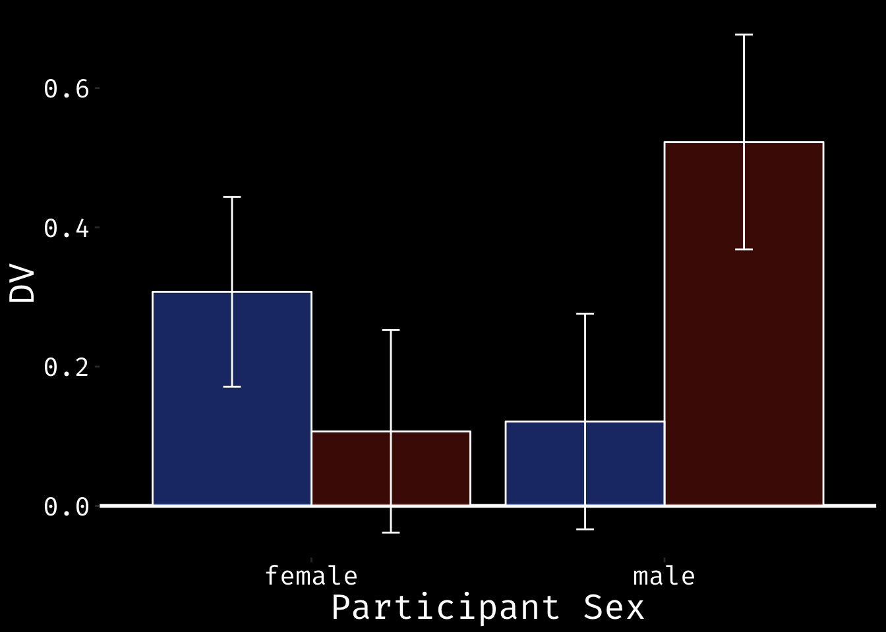
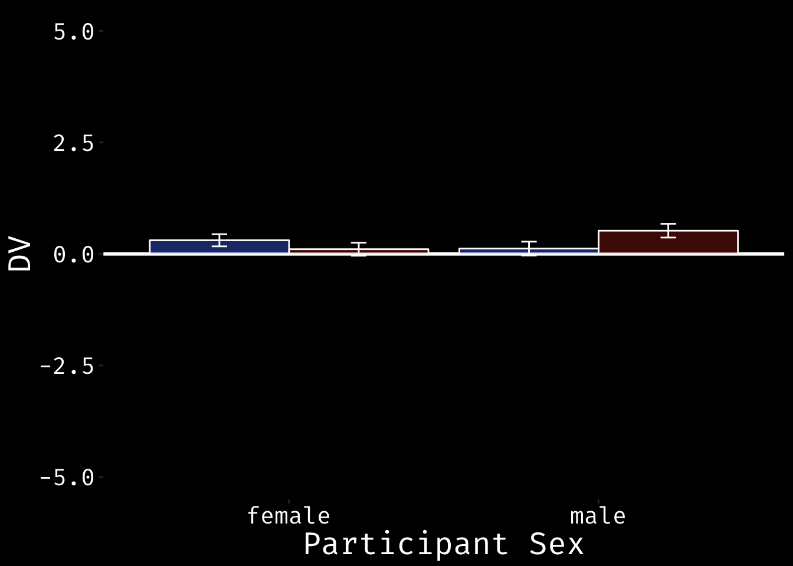
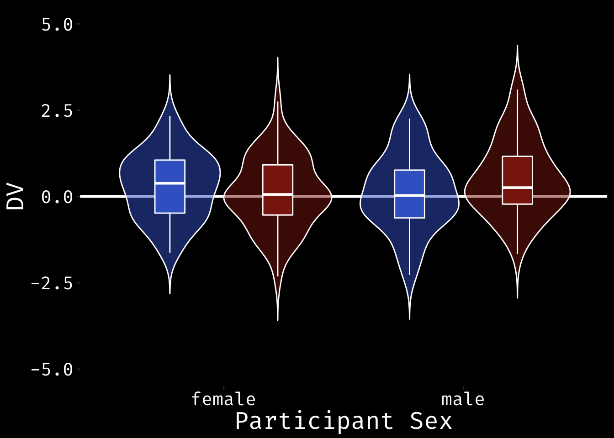
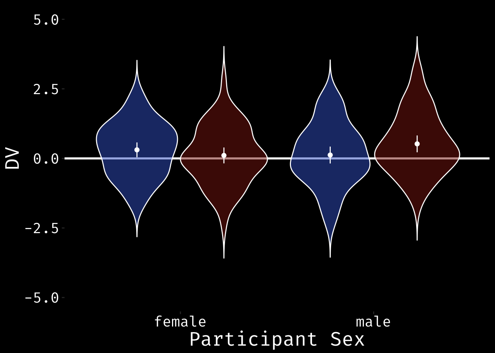
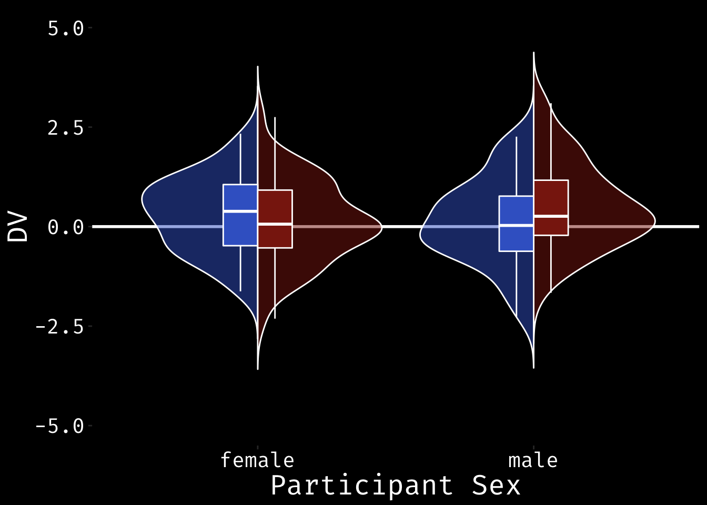
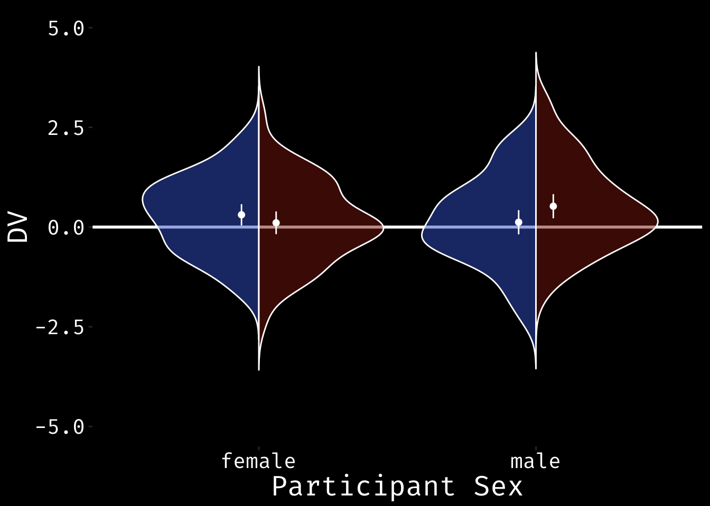

library(tidyverse)I compared bar plots to violin plots in a recent talk to make the point that real data plotted with the full distribution make your effects look less impressive than minimalist bar charts that just show the means and standard errors, but give you a much better idea of what’s going on with your data.
I thought I’d post a quick tutorial for anyone who wants to see some code for creating violin-box plots and split-violin plots.
First, let’s simulate some data from a 2x2 design with a cross-over interaction with a 0.5 SD effect size.
n <- 100
data <- tibble(
sex = rep(c("male", "female"), n),
face_sex = rep(c("male", "female"), each = n)
) %>%
mutate(
dv = rnorm(n*2, 0, 1),
effect = ifelse(sex==face_sex, .5, 0),
dv = dv + effect
)I like to create a theme for all the plots in a talk or paper. This one is my standard white-on-black talk theme.
bgcolor <- "black"
textcolor <- "white"
my_theme <- theme(
plot.background = element_rect(fill = bgcolor, colour = bgcolor),
panel.background = element_rect(fill = NA),
legend.background = element_rect(fill = NA),
legend.position="none",
panel.grid.major = element_blank(),
panel.grid.minor = element_blank(),
text = element_text(family='Fira Code', colour = textcolor, size=20),
axis.text = element_text(family='Fira Code', colour = textcolor, size=15)
)I’ve commented it out below, but I recommend alsways using ggsave to save your plots for papers or talks. They are much better resolution than the plots you copy out of an Rmarkdown notebook.
data %>%
group_by(sex, face_sex) %>%
summarise(
mean = mean(dv),
se = sd(dv)/sqrt(n())
) %>%
ggplot(aes(sex, mean, fill=face_sex)) +
geom_hline(yintercept=0, color=textcolor, size=1) +
geom_col(color = "white", position="dodge", alpha = 0.5) +
geom_errorbar(aes(ymin = mean-se, ymax=mean+se),
width=0.1,
position=position_dodge(0.9),
color=textcolor) +
ylab("DV") +
xlab("Participant Sex") +
scale_fill_manual(values = c("#3D66CC", "#892110")) +
my_theme
#ggsave("bar.png", width=10, height = 6)Notice how the bar plot hides the real range of the data. This is what it would look like plotted with the y-axis ranges shown below.
data %>%
group_by(sex, face_sex) %>%
summarise(
mean = mean(dv),
se = sd(dv)/sqrt(n())
) %>%
ggplot(aes(sex, mean, fill=face_sex)) +
geom_hline(yintercept=0, color=textcolor, size=1) +
geom_col(color = "white", position="dodge", alpha = 0.5) +
geom_errorbar(aes(ymin = mean-se, ymax=mean+se),
width=0.1,
position=position_dodge(0.9),
color=textcolor) +
ylab("DV") +
xlab("Participant Sex") +
ylim(-5, 5) +
scale_fill_manual(values = c("#3D66CC", "#892110")) +
my_theme
data %>%
ggplot(aes(sex, dv, fill = face_sex)) +
geom_hline(yintercept=0, color=textcolor, size=1) +
geom_violin(color=textcolor, trim=FALSE, alpha = 0.5) +
geom_boxplot(color = textcolor, width = 0.25, position = position_dodge(width=0.9)) +
ylab("DV") +
xlab("Participant Sex") +
ylim(-5, 5) +
scale_fill_manual(values = c("#3D66CC", "#892110")) +
my_theme
#ggsave("violinbox.png", width=10, height = 6)The boxplot above showss the median and quartiles, which sometimes isn’t the summary statistic you want to emphasise (HT https://twitter.com/PaulMinda1). You can alternatively plot the mean and 95% CI using geom_pointrange. This requires a bit of data wrangling first.
summary_data <- data %>%
group_by(sex, face_sex) %>%
summarise(
mean = mean(dv),
min = mean(dv) - qnorm(0.975)*sd(dv)/sqrt(n()),
max = mean(dv) + qnorm(0.975)*sd(dv)/sqrt(n())
)
data %>%
ggplot(aes(sex, dv, fill = face_sex)) +
geom_hline(yintercept=0, color=textcolor, size=1) +
geom_violin(color=textcolor, trim=FALSE, alpha = 0.5) +
geom_pointrange(
data = summary_data,
aes(sex, mean, ymin=min, ymax=max),
shape = 20,
color = textcolor,
position = position_dodge(width = 0.9)
) +
ylab("DV") +
xlab("Participant Sex") +
ylim(-5, 5) +
scale_fill_manual(values = c("#3D66CC", "#892110")) +
scale_color_manual(values = c("#3D66CC", "#892110")) +
my_theme
#ggsave("violin_pointrange.png", width=10, height = 6)To make a split violin plot, first you have to define geom_split_violin(). I derived the code from https://stackoverflow.com/questions/35717353/split-violin-plot-with-ggplot2.
GeomSplitViolin <- ggproto(
"GeomSplitViolin",
GeomViolin,
draw_group = function(self, data, ..., draw_quantiles = NULL) {
data <- transform(data,
xminv = x - violinwidth * (x - xmin),
xmaxv = x + violinwidth * (xmax - x))
grp <- data[1,'group']
newdata <- plyr::arrange(
transform(data, x = if(grp%%2==1) xminv else xmaxv),
if(grp%%2==1) y else -y
)
newdata <- rbind(newdata[1, ], newdata, newdata[nrow(newdata), ], newdata[1, ])
newdata[c(1,nrow(newdata)-1,nrow(newdata)), 'x'] <- round(newdata[1, 'x'])
if (length(draw_quantiles) > 0 & !scales::zero_range(range(data$y))) {
stopifnot(all(draw_quantiles >= 0), all(draw_quantiles <= 1))
quantiles <- ggplot2:::create_quantile_segment_frame(data, draw_quantiles)
aesthetics <- data[rep(1, nrow(quantiles)), setdiff(names(data), c("x", "y")), drop = FALSE]
aesthetics$alpha <- rep(1, nrow(quantiles))
both <- cbind(quantiles, aesthetics)
quantile_grob <- GeomPath$draw_panel(both, ...)
ggplot2:::ggname("geom_split_violin",
grid::grobTree(GeomPolygon$draw_panel(newdata, ...), quantile_grob))
} else {
ggplot2:::ggname("geom_split_violin", GeomPolygon$draw_panel(newdata, ...))
}
}
)
geom_split_violin <- function (mapping = NULL,
data = NULL,
stat = "ydensity",
position = "identity", ...,
draw_quantiles = NULL,
trim = TRUE,
scale = "area",
na.rm = FALSE,
show.legend = NA,
inherit.aes = TRUE) {
layer(data = data,
mapping = mapping,
stat = stat,
geom = GeomSplitViolin,
position = position,
show.legend = show.legend,
inherit.aes = inherit.aes,
params = list(trim = trim,
scale = scale,
draw_quantiles = draw_quantiles,
na.rm = na.rm, ...)
)
}Once you’ve defined the new geom, you can use geom_split_violin pretty much like geom_violin. Note how the position of the geom_boxplot changes to put the boxplots side-by-side.
data %>%
ggplot(aes(sex, dv, fill = face_sex)) +
geom_hline(yintercept=0, color=textcolor, size=1) +
geom_split_violin(color=textcolor, trim=FALSE, alpha = 0.5) +
geom_boxplot(color = textcolor,
width = 0.25,
position = position_dodge(width=0.25)) +
ylab("DV") +
xlab("Participant Sex") +
ylim(-5, 5) +
scale_fill_manual(values = c("#3D66CC", "#892110")) +
my_theme
#ggsave("split_violin.png", width=10, height = 6)This is a split violin with means and 95% CIs defined.
summary_data <- data %>%
group_by(sex, face_sex) %>%
summarise(
mean = mean(dv),
min = mean(dv) - qnorm(0.975)*sd(dv)/sqrt(n()),
max = mean(dv) + qnorm(0.975)*sd(dv)/sqrt(n())
)
data %>%
ggplot(aes(sex, dv, fill = face_sex)) +
geom_hline(yintercept=0, color=textcolor, size=1) +
geom_split_violin(color=textcolor, trim=FALSE, alpha = 0.5) +
geom_pointrange(
data = summary_data,
aes(sex, mean, ymin=min, ymax=max),
color = textcolor,
shape = 20, # 95,
position = position_dodge(width = 0.25)
) +
ylab("DV") +
xlab("Participant Sex") +
ylim(-5, 5) +
scale_fill_manual(values = c("#3D66CC", "#892110")) +
scale_color_manual(values = c("#3D66CC", "#892110")) +
my_theme
#ggsave("split_violin_pointrange.png", width=10, height = 6)